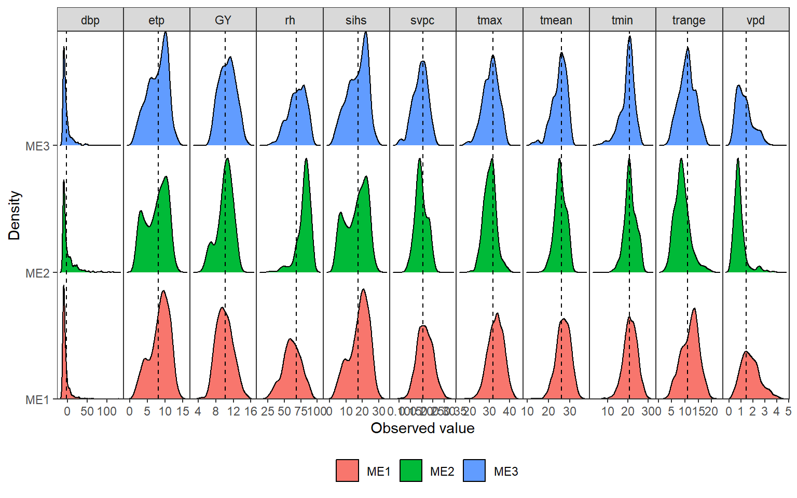

Supplementary figures

Figure 0.1: Distribution of climate variables….
1 Contribution of variables in Principal component analysis

Figure 1.1: contribution of variables
2 Environmental tipology
2.1 maximum temperature

Figure 2.1: Quantiles of maximum temperature observed in the studied environments (a) and mega-environments (b) across distinct crop stages.
2.2 minimum temperature

Figure 2.2: Quantiles of minimum temperature observed in the studied environments (a) and mega-environments (b) across distinct crop stages.
2.3 potential evapotranspiration

Figure 2.3: Quantiles of potential evapotranspiration observed in the studied environments (a) and mega-environments (b) across distinct crop stages.
##
## -------------------------------------------------------------------------------
## Principal Component Analysis
## -------------------------------------------------------------------------------
## # A tibble: 9 × 4
## PC Eigenvalues `Variance (%)` `Cum. variance (%)`
## <chr> <dbl> <dbl> <dbl>
## 1 PC1 2.89 32.1 32.1
## 2 PC2 1.96 21.8 53.9
## 3 PC3 1.09 12.1 65.9
## 4 PC4 0.896 9.96 75.9
## 5 PC5 0.808 8.97 84.9
## 6 PC6 0.691 7.68 92.6
## 7 PC7 0.367 4.08 96.6
## 8 PC8 0.255 2.83 99.5
## 9 PC9 0.0481 0.534 100
## -------------------------------------------------------------------------------
## Factor Analysis - factorial loadings after rotation-
## -------------------------------------------------------------------------------
## # A tibble: 9 × 6
## VAR FA1 FA2 FA3 Communality Uniquenesses
## <chr> <dbl> <dbl> <dbl> <dbl> <dbl>
## 1 GMC -0.635 0.141 0.285 0.504 0.496
## 2 PH -0.888 -0.103 -0.292 0.885 0.115
## 3 EH -0.899 -0.155 0.137 0.850 0.150
## 4 BTL 0.0469 0.0981 -0.882 0.789 0.211
## 5 GY -0.365 0.772 -0.264 0.798 0.202
## 6 EL 0.0397 0.573 0.112 0.343 0.657
## 7 ER 0.529 0.591 0.238 0.685 0.315
## 8 GWE 0.166 0.794 -0.353 0.783 0.217
## 9 HSW 0.356 0.412 -0.0196 0.297 0.703
## -------------------------------------------------------------------------------
## Comunalit Mean: 0.6594318
## -------------------------------------------------------------------------------
## Selection differential for the waasby index
## -------------------------------------------------------------------------------
## # A tibble: 9 × 6
## VAR Factor Xo Xs SD SDperc
## <chr> <chr> <dbl> <dbl> <dbl> <dbl>
## 1 GMC FA 1 53.3 72.9 19.6 36.8
## 2 PH FA 1 55.6 68.8 13.2 23.7
## 3 EH FA 1 49.9 60.8 10.9 21.9
## 4 GY FA 2 48.8 71.7 22.8 46.7
## 5 EL FA 2 51.2 62.2 11.0 21.4
## 6 ER FA 2 50.7 53.8 3.09 6.09
## 7 GWE FA 2 57.3 65.4 8.14 14.2
## 8 HSW FA 2 58.5 51.9 -6.56 -11.2
## 9 BTL FA 3 60.1 60.8 0.755 1.26
## -------------------------------------------------------------------------------
## Selection differential for the mean of the variables
## -------------------------------------------------------------------------------
## # A tibble: 9 × 11
## VAR Factor Xo Xs SD SDperc h2 SG SGperc sense goal
## <chr> <chr> <dbl> <dbl> <dbl> <dbl> <dbl> <dbl> <dbl> <chr> <dbl>
## 1 GMC FA 1 28.5 27.5 -0.966 -3.39 0.816 -0.788 -2.77 decrease 100
## 2 PH FA 1 275. 267. -7.88 -2.87 0.953 -7.51 -2.73 decrease 100
## 3 EH FA 1 106. 104. -1.72 -1.62 0.904 -1.55 -1.47 decrease 100
## 4 GY FA 2 10.6 11.0 0.409 3.86 0.511 0.209 1.98 increase 100
## 5 EL FA 2 18.2 18.4 0.197 1.08 0.759 0.150 0.821 increase 100
## 6 ER FA 2 16.1 16.4 0.242 1.50 0.908 0.220 1.36 increase 100
## 7 GWE FA 2 169. 170. 0.934 0.552 0.646 0.603 0.356 increase 100
## 8 HSW FA 2 34.4 33.5 -0.892 -2.59 0.636 -0.567 -1.65 increase 0
## 9 BTL FA 3 1.35 1.38 0.0232 1.71 0.735 0.0170 1.26 decrease 0
## ------------------------------------------------------------------------------
## Selected genotypes
## -------------------------------------------------------------------------------
## G4 G5 G10 G11 G3 G6
## -------------------------------------------------------------------------------
##
## -------------------------------------------------------------------------------
## Principal Component Analysis
## -------------------------------------------------------------------------------
## # A tibble: 9 × 4
## PC Eigenvalues `Variance (%)` `Cum. variance (%)`
## <chr> <dbl> <dbl> <dbl>
## 1 PC1 2.80 31.2 31.2
## 2 PC2 2.23 24.8 55.9
## 3 PC3 1.42 15.8 71.7
## 4 PC4 0.921 10.2 81.9
## 5 PC5 0.734 8.16 90.1
## 6 PC6 0.391 4.34 94.4
## 7 PC7 0.360 4.00 98.4
## 8 PC8 0.0929 1.03 99.5
## 9 PC9 0.0481 0.535 100
## -------------------------------------------------------------------------------
## Factor Analysis - factorial loadings after rotation-
## -------------------------------------------------------------------------------
## # A tibble: 9 × 6
## VAR FA1 FA2 FA3 Communality Uniquenesses
## <chr> <dbl> <dbl> <dbl> <dbl> <dbl>
## 1 GMC 0.0288 -0.312 -0.764 0.682 0.318
## 2 PH 0.174 -0.934 -0.0740 0.907 0.0926
## 3 EH -0.0774 -0.899 -0.269 0.887 0.113
## 4 BTL -0.0395 -0.121 0.776 0.618 0.382
## 5 GY 0.927 -0.0816 -0.0583 0.869 0.131
## 6 EL 0.358 0.0523 0.492 0.373 0.627
## 7 ER 0.284 0.698 -0.146 0.589 0.411
## 8 GWE 0.910 0.0151 0.265 0.899 0.101
## 9 HSW 0.767 0.200 -0.0452 0.630 0.370
## -------------------------------------------------------------------------------
## Comunalit Mean: 0.717052
## -------------------------------------------------------------------------------
## Selection differential for the waasby index
## -------------------------------------------------------------------------------
## # A tibble: 9 × 6
## VAR Factor Xo Xs SD SDperc
## <chr> <chr> <dbl> <dbl> <dbl> <dbl>
## 1 GY FA 1 48.1 73.7 25.6 53.3
## 2 GWE FA 1 53.9 74.0 20.1 37.3
## 3 HSW FA 1 59.5 73.0 13.5 22.7
## 4 PH FA 2 62.1 70.9 8.87 14.3
## 5 EH FA 2 52.8 51.5 -1.30 -2.46
## 6 ER FA 2 48.1 50.5 2.43 5.06
## 7 GMC FA 3 53.3 48.9 -4.35 -8.17
## 8 BTL FA 3 68.0 80.1 12.1 17.8
## 9 EL FA 3 51.9 65.2 13.3 25.7
## -------------------------------------------------------------------------------
## Selection differential for the mean of the variables
## -------------------------------------------------------------------------------
## # A tibble: 9 × 11
## VAR Factor Xo Xs SD SDperc h2 SG SGperc sense goal
## <chr> <chr> <dbl> <dbl> <dbl> <dbl> <dbl> <dbl> <dbl> <chr> <dbl>
## 1 GY FA 1 10.9 11.5 0.625 5.75 0.449 0.280 2.58 increase 100
## 2 GWE FA 1 164. 173. 9.79 5.98 0.558 5.46 3.34 increase 100
## 3 HSW FA 1 34.8 35.5 0.713 2.05 0.355 0.253 0.726 increase 100
## 4 PH FA 2 277. 275. -2.11 -0.763 0.953 -2.01 -0.727 decrease 100
## 5 EH FA 2 107. 112. 4.68 4.36 0.909 4.25 3.96 decrease 0
## 6 ER FA 2 16.2 16.0 -0.203 -1.25 0.867 -0.176 -1.09 increase 0
## 7 GMC FA 3 27.0 27.8 0.816 3.02 0.727 0.593 2.20 decrease 0
## 8 BTL FA 3 1.32 1.12 -0.199 -15.1 0.803 -0.160 -12.1 decrease 100
## 9 EL FA 3 18.0 18.4 0.390 2.17 0.679 0.265 1.47 increase 100
## ------------------------------------------------------------------------------
## Selected genotypes
## -------------------------------------------------------------------------------
## G4 G10 G13 G9 G5 G15
## -------------------------------------------------------------------------------
##
## -------------------------------------------------------------------------------
## Principal Component Analysis
## -------------------------------------------------------------------------------
## # A tibble: 9 × 4
## PC Eigenvalues `Variance (%)` `Cum. variance (%)`
## <chr> <dbl> <dbl> <dbl>
## 1 PC1 2.75 30.5 30.5
## 2 PC2 1.94 21.5 52.0
## 3 PC3 1.21 13.4 65.5
## 4 PC4 0.880 9.78 75.3
## 5 PC5 0.713 7.93 83.2
## 6 PC6 0.648 7.20 90.4
## 7 PC7 0.386 4.29 94.7
## 8 PC8 0.343 3.81 98.5
## 9 PC9 0.136 1.52 100
## -------------------------------------------------------------------------------
## Factor Analysis - factorial loadings after rotation-
## -------------------------------------------------------------------------------
## # A tibble: 9 × 6
## VAR FA1 FA2 FA3 Communality Uniquenesses
## <chr> <dbl> <dbl> <dbl> <dbl> <dbl>
## 1 GMC 0.0531 0.0864 0.818 0.679 0.321
## 2 PH 0.865 -0.227 -0.0936 0.808 0.192
## 3 EH 0.892 0.0574 -0.0498 0.801 0.199
## 4 BTL 0.714 0.356 -0.236 0.692 0.308
## 5 GY 0.482 0.433 0.276 0.496 0.504
## 6 EL 0.0968 0.614 0.241 0.444 0.556
## 7 ER -0.501 0.716 0.136 0.783 0.217
## 8 GWE 0.0968 0.739 -0.171 0.585 0.415
## 9 HSW -0.278 0.0234 0.727 0.606 0.394
## -------------------------------------------------------------------------------
## Comunalit Mean: 0.6548271
## -------------------------------------------------------------------------------
## Selection differential for the waasby index
## -------------------------------------------------------------------------------
## # A tibble: 9 × 6
## VAR Factor Xo Xs SD SDperc
## <chr> <chr> <dbl> <dbl> <dbl> <dbl>
## 1 PH FA 1 58.0 66.5 8.50 14.7
## 2 EH FA 1 57.3 65.0 7.74 13.5
## 3 BTL FA 1 54.0 78.7 24.7 45.7
## 4 GY FA 1 50.2 62.5 12.4 24.6
## 5 EL FA 2 55.4 64.4 9.02 16.3
## 6 ER FA 2 42.5 54.9 12.4 29.2
## 7 GWE FA 2 52.6 64.0 11.4 21.8
## 8 GMC FA 3 53.0 62.1 9.09 17.1
## 9 HSW FA 3 51.2 51.5 0.235 0.458
## -------------------------------------------------------------------------------
## Selection differential for the mean of the variables
## -------------------------------------------------------------------------------
## # A tibble: 9 × 11
## VAR Factor Xo Xs SD SDperc h2 SG SGperc sense
## <chr> <chr> <dbl> <dbl> <dbl> <dbl> <dbl> <dbl> <dbl> <chr>
## 1 PH FA 1 264. 257. -6.98 -2.64 7.30e- 1 -5.10e+ 0 -1.93e+ 0 decr…
## 2 EH FA 1 99.0 92.6 -6.35 -6.41 6.92e- 1 -4.39e+ 0 -4.44e+ 0 decr…
## 3 BTL FA 1 1.43 0.885 -0.550 -38.3 7.56e-10 -4.16e-10 -2.90e- 8 decr…
## 4 GY FA 1 9.83 10.3 0.439 4.46 1.11e-10 4.87e-11 4.96e-10 incr…
## 5 EL FA 2 18.7 19.0 0.348 1.87 1.32e- 1 4.58e- 2 2.45e- 1 incr…
## 6 ER FA 2 16.1 16.6 0.556 3.46 5.64e- 1 3.13e- 1 1.95e+ 0 incr…
## 7 GWE FA 2 177. 188. 10.6 5.96 0 0 0 incr…
## 8 GMC FA 3 32.1 31.8 -0.294 -0.916 4.40e- 1 -1.29e- 1 -4.03e- 1 decr…
## 9 HSW FA 3 33.2 33.2 -0.0392 -0.118 1.83e- 1 -7.16e- 3 -2.15e- 2 incr…
## # … with 1 more variable: goal <dbl>
## ------------------------------------------------------------------------------
## Selected genotypes
## -------------------------------------------------------------------------------
## G2 G4 G3 G15 G11 G10
## -------------------------------------------------------------------------------
##
## -------------------------------------------------------------------------------
## Principal Component Analysis
## -------------------------------------------------------------------------------
## # A tibble: 9 × 4
## PC Eigenvalues `Variance (%)` `Cum. variance (%)`
## <chr> <dbl> <dbl> <dbl>
## 1 PC1 2.41 26.8 26.8
## 2 PC2 1.60 17.7 44.5
## 3 PC3 1.41 15.6 60.2
## 4 PC4 1.26 14.0 74.2
## 5 PC5 0.880 9.78 84.0
## 6 PC6 0.642 7.13 91.1
## 7 PC7 0.440 4.89 96.0
## 8 PC8 0.192 2.14 98.1
## 9 PC9 0.169 1.88 100
## -------------------------------------------------------------------------------
## Factor Analysis - factorial loadings after rotation-
## -------------------------------------------------------------------------------
## # A tibble: 9 × 7
## VAR FA1 FA2 FA3 FA4 Communality Uniquenesses
## <chr> <dbl> <dbl> <dbl> <dbl> <dbl> <dbl>
## 1 GMC 0.0927 -0.887 -0.0818 -0.112 0.815 0.185
## 2 PH -0.668 -0.379 -0.0847 0.492 0.840 0.160
## 3 EH -0.0775 -0.0265 -0.0895 0.898 0.821 0.179
## 4 BTL -0.590 0.0595 -0.514 -0.488 0.854 0.146
## 5 GY -0.178 0.00193 -0.568 0.438 0.546 0.454
## 6 EL 0.687 -0.0591 0.0427 0.0229 0.477 0.523
## 7 ER 0.796 0.0547 -0.291 -0.183 0.755 0.245
## 8 GWE 0.205 0.00326 -0.845 0.0102 0.756 0.244
## 9 HSW 0.135 0.860 -0.115 -0.199 0.811 0.189
## -------------------------------------------------------------------------------
## Comunalit Mean: 0.7418174
## -------------------------------------------------------------------------------
## Selection differential for the waasby index
## -------------------------------------------------------------------------------
## # A tibble: 9 × 6
## VAR Factor Xo Xs SD SDperc
## <chr> <chr> <dbl> <dbl> <dbl> <dbl>
## 1 PH FA 1 56.1 67.9 11.7 20.9
## 2 BTL FA 1 56.2 64.9 8.68 15.4
## 3 EL FA 1 54.9 50.1 -4.80 -8.74
## 4 ER FA 1 57.3 65.1 7.79 13.6
## 5 GMC FA 2 52.5 62.4 9.87 18.8
## 6 HSW FA 2 66.3 70.6 4.31 6.50
## 7 GY FA 3 62.4 70.5 8.17 13.1
## 8 GWE FA 3 56.1 78.6 22.5 40.1
## 9 EH FA 4 50.9 65.8 14.9 29.3
## -------------------------------------------------------------------------------
## Selection differential for the mean of the variables
## -------------------------------------------------------------------------------
## # A tibble: 9 × 11
## VAR Factor Xo Xs SD SDperc h2 SG SGperc sense
## <chr> <chr> <dbl> <dbl> <dbl> <dbl> <dbl> <dbl> <dbl> <chr>
## 1 PH FA 1 280. 271. -8.38 -3.00 6.85e- 1 -5.74e+ 0 -2.05e+ 0 decr…
## 2 BTL FA 1 1.36 1.31 -0.0491 -3.61 1.26e- 9 -6.19e-11 -4.55e- 9 decr…
## 3 EL FA 1 18.5 18.5 0.00844 0.0456 7.43e-11 6.27e-13 3.38e-12 incr…
## 4 ER FA 1 16.1 16.4 0.320 1.99 5.82e- 1 1.86e- 1 1.16e+ 0 incr…
## 5 GMC FA 2 29.4 29.0 -0.406 -1.38 4.71e- 1 -1.91e- 1 -6.52e- 1 decr…
## 6 HSW FA 2 34.4 35.3 0.858 2.49 5.61e- 1 4.82e- 1 1.40e+ 0 incr…
## 7 GY FA 3 10.4 10.7 0.290 2.79 1.54e- 1 4.46e- 2 4.28e- 1 incr…
## 8 GWE FA 3 179. 190. 11.4 6.38 2.24e- 1 2.56e+ 0 1.43e+ 0 incr…
## 9 EH FA 4 108. 101. -7.44 -6.89 6.10e- 1 -4.54e+ 0 -4.20e+ 0 decr…
## # … with 1 more variable: goal <dbl>
## ------------------------------------------------------------------------------
## Selected genotypes
## -------------------------------------------------------------------------------
## G24 G22 G23 G4 G3 G16
## -------------------------------------------------------------------------------3 Selection gains for stability

4 PC1 x PC2